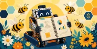

Upload your engineering portfolio PDF. You get a rule check, a section-by-section checklist of what judges expect, page-by-page notes, and a criterion-by-criterion read for every judged award (Competition Manual TU06, Section 6).
